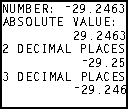
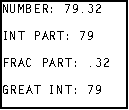
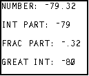
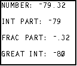
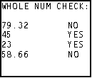
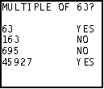
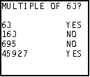

| HOME >> Tutorials >> Tutorial 30: Math Commands 1 |
Introduction:
So we are continuing are little break from game programming to learn the math commands. You might think that you do not need to learn these commands because you are only interested in making games, but these commands are also used in games also. If you think about it, games use numbers too. By the end of this tutorial, you will know how to round and find the absolute value of a number and get just the info before or after the decimal point. If you are not quite sure what all of these means, just wait and it'll all become clearer to you.
New Commands:
| abs( | Finds the absolute value of a value |
| round( | Rounds a value to a specified number of decimal places |
| iPart( | Finds the integer part of a value |
| fPart( | Finds the fractional part or parts of a value |
| int( | Finds the largest integer less than or equal to a value |
| abs(value) | round(value[,#decimals]) | iPart(value) | fPart(value) | int(value) |
The Codes:
There will be three codes that'll show you the uses of these 5 commands. The first one will show you how to use abs( and round(, which is very straightforward. The second set of code will go over the simple uses of iPart(, fPart(, and int(, and explain the slight difference between iPart( and int(. The last code will show you a game application of the use of fPart(.
| : | For AShell, SOS, and TI-Explorer |
| ClrHome | Clears the home screen |
| -29.2463 |
Stores A as -29.2463 |
| abs(A |
Stores the absolute value of A into B |
| round(A,2 |
Stores the A rounded to 2 decimal places into C |
| round(A,3 |
Stores the A rounded to 3 decimal places into D |
| Disp "" | Displays a blank line |
| Disp "ABSOLUTE VALUE:",B | Displays "ABSOLUTE VALUE:" and the value of B |
| Disp "2 DECIMAL PLACES",C | Displays "2 DECIMAL PLACES" and the value of C |
| Disp "3 DECIMAL PLACES",D | Displays "3 DECIMAL PLACES" and the value of D |
| Output(1,1,"NUMBER: | Displays "NUMBER:" on top line |
| Output(1,9,A | Displays the value of A |

That was pretty simple, right? Using abs( and round( is pretty much just like squaring or cube rooting a number. It's not that hard. There does not always need to be a long drawn out explanation. Sometimes the comments to the right of the code suffice. Now, let's go on to the next code will demonstrate how to use iPart(, fPart(, and int(.
| : | For AShell, SOS, and TI-Explorer |
| ClrHome | Clears the home screen |
| 79.32 |
Stores A as 79.32 |
| iPart(A |
Stores the integer part of A into B |
| fPart(A |
Stores the fractional part of A into C |
| int(A |
Stores the greatest integer less than or equal to A into B |
| Output(1,1,"NUMBER: | Displays "NUMBER:" on top line |
| Output(1,9,A | Displays the value of A |
| Output(3,1,"INT PART: | Displays "INTEGER PART:" |
| Output(3,11,B | Displays the value of B |
| Output(5,1,"FRAC PART: | Displays "FRACTION PART" |
| Output(5,12,C | Displays the value of C |
| Output(7,1,"GREAT INT: | Displays "GREATEST INT:" |
| Output(7,12,D | Displays the value of D |
| Pause | Suspends program and waits for use to press |
| -A |
Stores negative of A into A |
| iPart(A |
Stores the integer part of A into B |
| fPart(A |
Stores the fractional part of A into C |
| int(A |
Stores the greatest integer less than or equal to A into B |
| Output(1,1,"NUMBER: | Displays "NUMBER:" on top line |
| Output(1,9,A | Displays the value of A |
| Output(3,1,"INT PART: | Displays "INTEGER PART:" |
| Output(3,11,B | Displays the value of B |
| Output(5,1,"FRAC PART: | Displays "FRACTION PART" |
| Output(5,12,C | Displays the value of C |
| Output(7,1,"GREAT INT: | Displays "GREATEST INT:" |
| Output(7,12,D | Displays the value of D |
 press  

Hmmm...interesting. The greatest integer command was the same on the first screen, but one less on the second screen. Why is that? First, let me explain everything and then I will make sure you know why that is. The first part should not be too hard to understand. You originally start out with a number: 79.32. First, you take the iPart (integer part) of the number, which is everything before the decimal point, so you have 79 as you answer. Next, you take the fPart (fractional part) of the 79.32, which leaves you with only .32 because that's what's after the decimal point. Finally, you take the greatest integer less than or equal to 79.32, which is in fact 79. So in this case, using iPart( and int( render the same value: 79. On the second screen, we first negate the number, making it no -79.32. Now with all these commands, if the number is negative, the value that it returns will also be negative. That's why after finding the iPart( of -79.32, we get -79, and after finding the fPart( or that number, we get -.32. Those two should not be too hard to comprehend, but that last displayed value, might raise an eyebrow. Why isn't the answer -79 to match the answer iPart( returned? This is because of the definition of the greatest integer command. It finds the greatest integer less than or equal to the number. So what's the greatest integer less than -79? -80. -79 is actually greater than -79.32. Now that I've explained it, it should not seem as tricky as before and you should really now understand the definition of the int( command. I know it may have been a little confusing before. As promised, in the last code I will show you some game applications of the use of fPart(. I can almost guarantee that you will use one of these examples in one of your games.
| : | For AShell, SOS, and TI-Explorer |
| ClrHome | Clears the home screen |
| 79.32 |
Stores A as 79.32, B as 45.00, C as 23, and D as 58.66 |
| Output(1,1,"WHOLE NUM CHECK: | Displays "WHOLE NUM CHECK:" on top line |
| Output(3,1,A | Displays the value of A |
| If fPart(A)=0:Then | If the fractional part of A is eqaul to 0, then |
| Output(3,13,"YES | Display "YES" |
| Else | if not, then |
| Output(3,13,"NO | Display "NO" |
| End | Ends If-Then-Else statement |
| Output(4,1,B | Displays the value of B |
| If fPart(B)=0:Then | If the fractional part of B is eqaul to 0, then |
| Output(4,13,"YES | Display "YES" |
| Else | if not, then |
| Output(4,13,"NO | Display "NO" |
| End | Ends If-Then-Else statement |
| Output(5,1,C | Displays the value of C |
| If fPart(C)=0:Then | If the fractional part of C is eqaul to 0, then |
| Output(5,13,"YES | Display "YES" |
| Else | if not, then |
| Output(5,13,"NO | Display "NO" |
| End | Ends If-Then-Else statement |
| Output(6,1,D | Displays the value of D |
| If fPart(D)=0:Then | If the fractional part of D is eqaul to 0, then |
| Output(6,13,"YES | Display "YES" |
| Else | if not, then |
| Output(6,13,"NO | Display "NO" |
| End | Ends If-Then-Else statement |
| Pause | Suspends program and waits for use to press |
| ClrHome | Clears the home screen |
| 63 |
Stores A as 63, B as 163, C as 695, and D as 45927 |
| Output(1,1,"MULTIPLE OF 63? | Displays "MULTIPLE OF 63?" on top line |
| Output(3,1,A | Displays the value of A |
| If fPart(A/63)=0:Then | If the fractional part of A divided by 63 is eqaul to 0, then |
| Output(3,13,"YES | Display "YES" |
| Else | if not, then |
| Output(3,13,"NO | Display "NO" |
| End | Ends If-Then-Else statement |
| Output(4,1,B | Displays the value of B |
| If fPart(B/63)=0:Then | If the fractional part of B divided by 63 is eqaul to 0, then |
| Output(4,13,"YES | Display "YES" |
| Else | if not, then |
| Output(4,13,"NO | Display "NO" |
| End | Ends If-Then-Else statement |
| Output(5,1,C | Displays the value of C |
| If fPart(C/63)=0:Then | If the fractional part of C divided by 63 is eqaul to 0, then |
| Output(5,13,"YES | Display "YES" |
| Else | if not, then |
| Output(5,13,"NO | Display "NO" |
| End | Ends If-Then-Else statement |
| Output(6,1,D | Displays the value of D |
| If fPart(D/63)=0:Then | If the fractional part of D divided by 63 is eqaul to 0, then |
| Output(6,13,"YES | Display "YES" |
| Else | if not, then |
| Output(6,13,"NO | Display "NO" |
| End | Ends If-Then-Else statement |
 press  

So now you know. When there is no fractional part of a number, fPart( returns 0. We can use this knowledge to test whether a value is an integer or not. So when you get the fPart( of 79.32, it returns .32, which is not equal to 0, so "NO" is displayed. When you take the fPart( of 45, however, it returns 0 because there is no fractional part, and therefore displays "YES." The second screen is really what will help you in game programming. What you are learning is how to see if a given value is a multiple of a number. This is very helpful when you want things to occur in multiples of hundreds. For instance, in my racing game, Ace Racer 2K1, I want the barriers to close in after every 100 barriers are past. I keep the number of barriers past into B, so each time the program loops back around I check to see if B is a multiple of 100. If it is not, then just go on ahead regularly. However, if it is a multiple of 100, then the barrier closes in a step. That's a game application of a mathematical command. Anyway, so when 63 (the value of A), is divided by 63, the fPart( is 0 because 63/63 is 1. Because of this, "YES" is displayed. On the next line however, the fPart( of 163/63 is not 0 (it's actually .587301587), so "NO" is displayed. What I am about to say is directed to those people who know a good amount of BASIC programming. I know the construction of using many If-Then-Else statements is not as optimal as the program can be. There are many ways to optimize the code, one of which would be to use a subroutine. However, subroutines are not explained until Tutorial 34, so this was the best that I can do. Sometimes it is better to use simpler methods, even though they are not the most efficient, because it is easier to learn the information that you are intended to learn. I just thought I should note that just so I do not receive any emails for programmers telling me that the code is not optimal.
Conclusion:
Now that you think about it, what you have just learned was not difficult at all. In fact, it is fairly easy to grasp the concept. In fact, you could have problem skipped this tutorial, not know about how to test to see whether a value is a multiple of a number, and still be a very good programmer. It is just that what you learned just makes programming easier for you. I am sure there is probably some other way to go about finding whether a value is a multiple, but this was is the easiest and most efficient. Like I said at the beginning, I definitely think you will be using that construction in one of you programs. In the next tutorial, we will march on with the mathematical theme, learning some more math commands. Some of the commands also are helpful in making games, not just mathematical programs.
If you do not understand a particular part in this lesson, have suggestions, or find any problems please contact me.
 |
 |
| Tutorial 29 | Tutorial 31 |